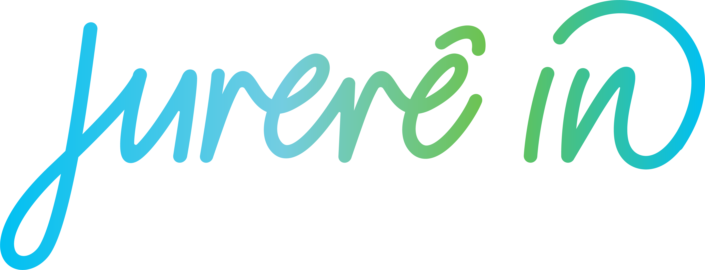
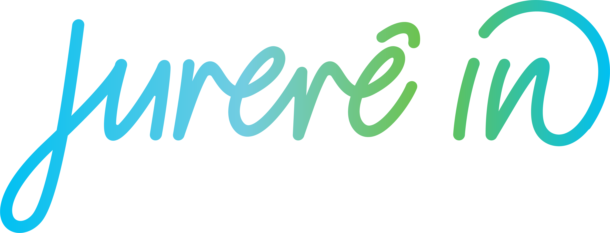
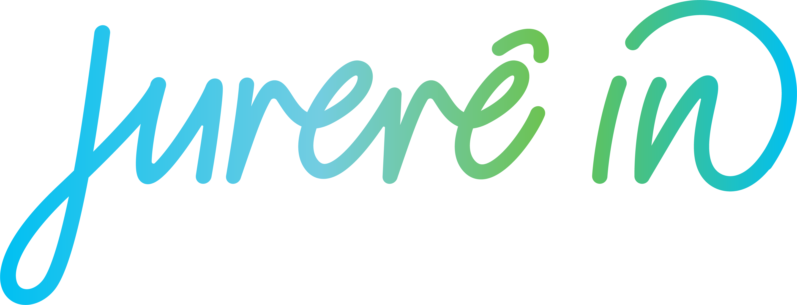

1. Como você avaliaria a organização geral do evento? Foi bem planejado e estruturado?
2. Quais foram os pontos fortes do evento que mais se destacaram para você?
3. O evento atendeu às suas expectativas?
4. Qual foi o aspecto mais memorável do evento para você?
5. Os palestrantes/apresentações foram interessantes e relevantes para o tema do evento?
6. Os recursos técnicos (som, iluminação, projeção, etc.) foram adequados e funcionaram corretamente?
7. Como você avaliaria a interação entre os participantes? Houve oportunidades suficientes para networking e troca de experiências?
8. Os horários foram cumpridos conforme o planejado? As atividades foram bem distribuídas ao longo do evento?
9. A comida e as opções de alimentação oferecidas no evento foram satisfatórias?
10. O evento ofereceu oportunidades de aprendizado e crescimento profissional?
11. As medidas de segurança foram adequadas, especialmente em relação à saúde e bem-estar dos participantes?
12. Havia atividades ou elementos do evento que você considerou desnecessários ou que poderiam ser melhorados?
13. A equipe de organização do evento foi atenciosa e prestativa em lidar com suas dúvidas ou necessidades?
14. Com base em sua experiência no evento, você recomendaria a participação em futuras edições?
Entre em contato: eventos@ilcampanario.com.br